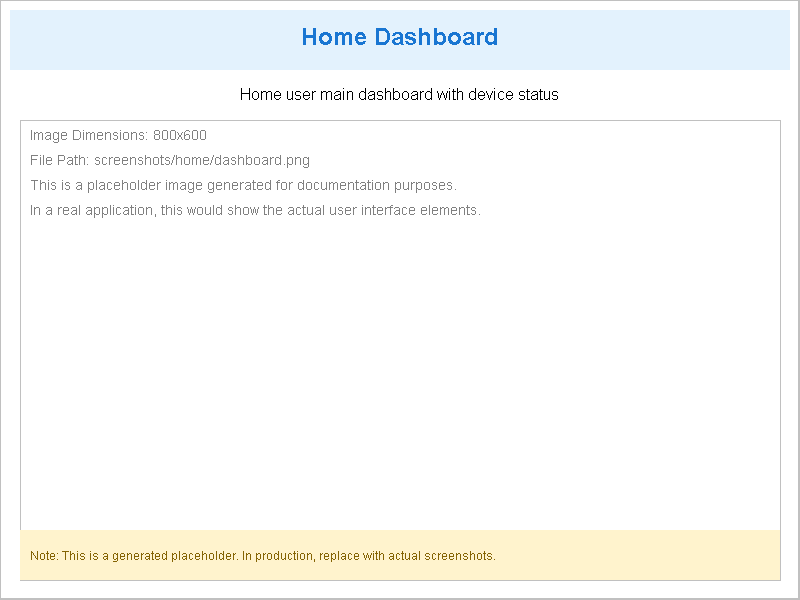
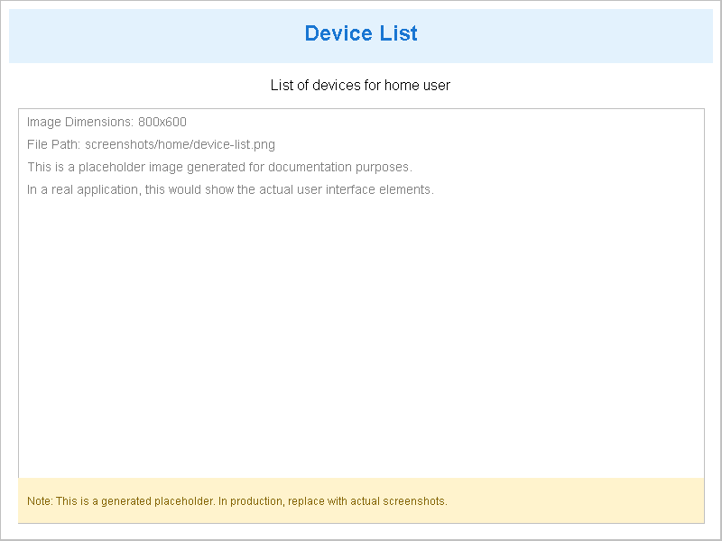
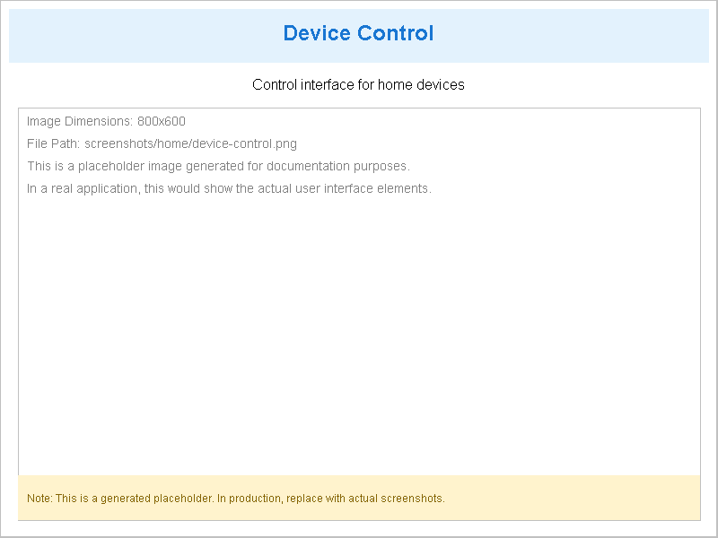
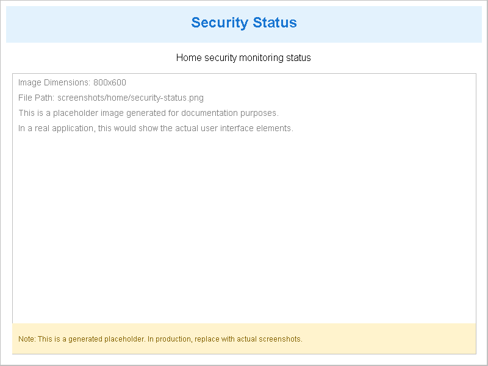

1. 角色概述
家庭用户是 MCP Agent 的基础使用角色，主要面向家庭网络环境，提供设备管理、家庭安全监控等核心功能。
3. 页面功能说明
3.1 仪表盘 (dashboard.html)
- 功能：展示系统整体状态和关键指标
- 主要信息：系统运行状态、设备在线数量、安全状态概览
- 操作：快速访问各功能模块

仪表盘界面截图
3.2 家庭仪表盘 (home/home-dashboard.html)
- 功能：专用于家庭环境的综合监控面板
- 主要信息：家庭网络状态、设备在线情况、安全事件提醒
- 操作：查看详细信息、快速设备控制
家庭仪表盘界面截图
3.3 设备列表 (home/device-list.html)
- 功能：管理家庭网络中的所有设备
- 主要信息：设备名称、类型、状态、IP地址、MAC地址
- 操作：添加设备、删除设备、查看设备详情、修改设备设置

设备列表界面截图
3.4 设备控制 (home/device-control.html)
- 功能：对单个设备进行详细控制
- 主要信息：设备当前状态、可执行的控制命令
- 操作：开启/关闭设备、调整设备参数、执行特定命令

设备控制界面截图
3.5 安全状态 (home/security-status.html)
- 功能：监控家庭网络的安全状态
- 主要信息：安全事件记录、威胁检测、访问控制状态
- 操作：查看安全事件详情、调整安全设置

安全状态界面截图
4. 操作指南
4.1 设备管理操作
- 查看设备列表：点击「家庭功能」→「设备管理」→「设备列表」
- 控制设备：在设备列表中选择设备，点击「控制」按钮
- 添加新设备：在设备列表页面点击「添加设备」按钮，按照向导操作
4.2 安全监控操作
- 查看安全状态：点击「家庭功能」→「家庭安全」→「安全状态」
- 查看安全事件：在安全状态页面查看事件列表，点击事件查看详情
- 配置访问控制：点击「访问控制」页面，设置访问规则
5. 截图说明
本手册包含以下页面的截图：
6. 常见问题
6.1 设备无法添加
原因：设备未连接到家庭网络或未开启发现模式
解决：确保设备已联网，开启设备的发现模式，重新尝试添加
6.2 安全事件频繁告警
原因：可能存在网络攻击或异常访问
解决：检查网络设备，更新设备固件，调整安全设置
6.3 设备控制无响应
原因：设备离线或网络连接不稳定
解决：检查设备电源和网络连接，重启设备后重试
7. 技术支持
如有其他问题，请参考系统内的帮助文档或联系技术支持。